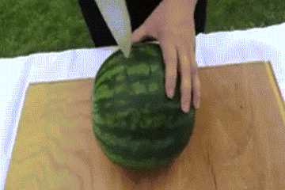

中国成为全球最大西瓜生产和消费国！是不是因为我国吃瓜群众太多了？
根据联合国粮农组织FAO数据，2018年中国西瓜产量为
79,269,592吨
这么多瓜，能榨出多少西瓜汁呢？
以出汁率80%来计算，去年中国产的瓜可以灌满：

国家统计局的数据展示出2016年全国吃瓜大户们的表现。
河南、山东在西瓜产量上一骑绝尘；新疆、湖北的西瓜甜如网剧初恋；海南一年四季吃瓜不停歇。
研究东方财富网的数据发现，夏季吃瓜时节，云南吃瓜成本最高；东三省吃瓜价格稳定

根据品种、生长环境的不同，西瓜也有“门派”之分。这些日常瓜，你都认识吗？

来源：搜狐、西瓜商情网